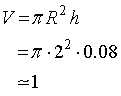

二次元拡散運動について-03
実際のMathematicaによる計算を以下に示します．
このように，拡散定数 200 (μm2/s)，照射エリア 4 μm，経過時間 0.01 ms，でのプロファイル（横軸はR)を示します． 図に示すように，t=0に近い時刻では，ほぼ矩形的に濃度が保たれていることがわかります． また，全積分，においては，

となり，規格化も問題ないことがわかります．
ではいくつかの条件でのMathematicaの計算結果をお示ししましょう．